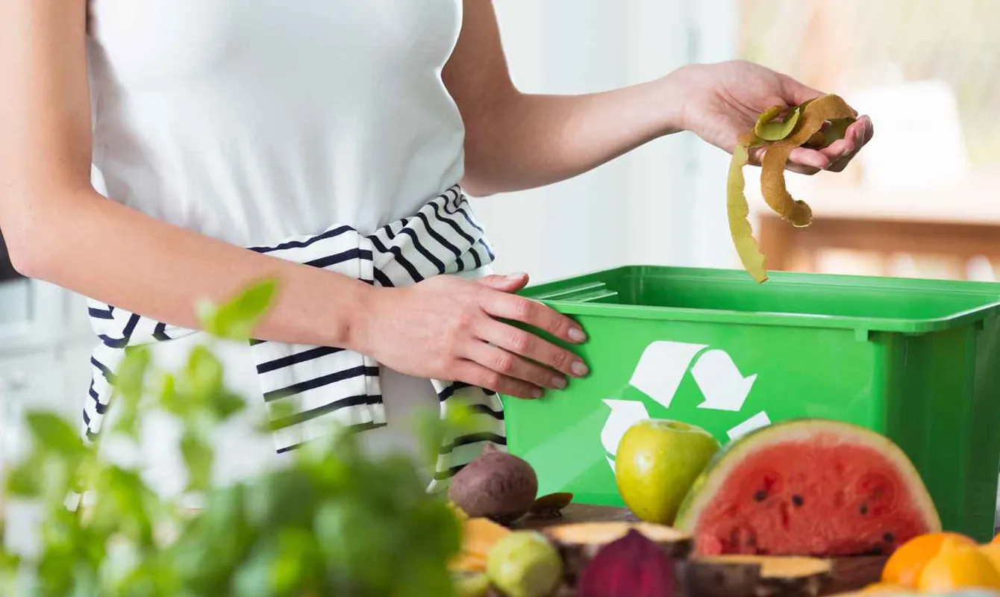
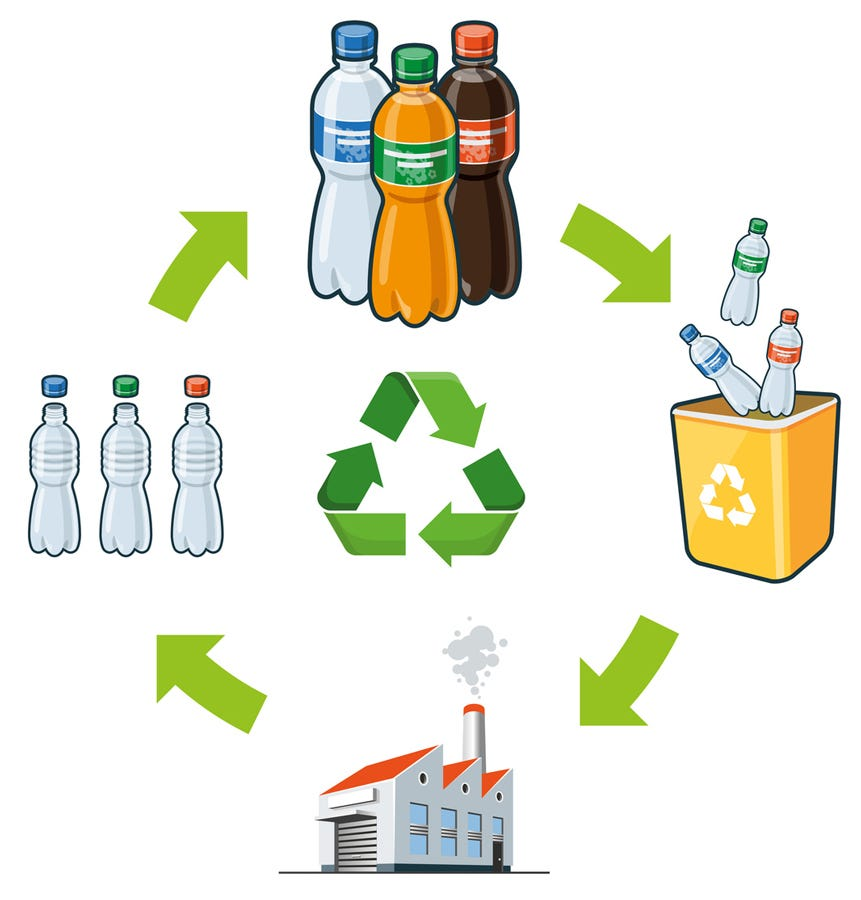
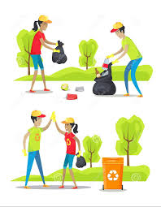
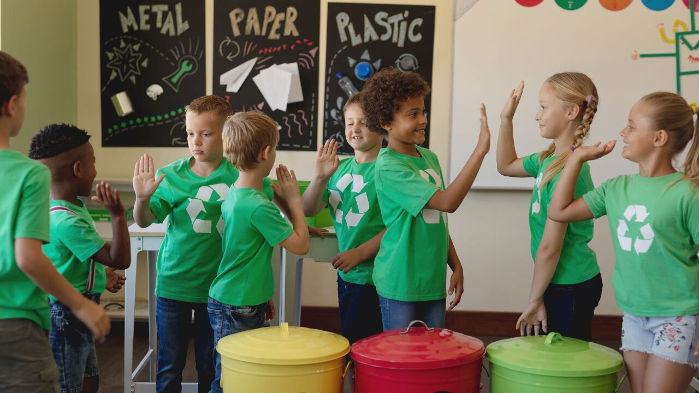

Bienvenidos a Eco-Vital
Tu aliado en la recolección de residuos.
Acerca de Nosotros
Somos una empresa comprometida con el medio ambiente y la recolección responsable de residuos. Desde nuestra fundación en 2020, hemos trabajado incansablemente para promover prácticas sostenibles y ayudar a comunidades a gestionar sus residuos de manera eficiente.
Nuestros Servicios
- Recolección de residuos orgánicos
- Recolección de residuos reciclables
- Asesoría en gestión de residuos
- Educación y concienciación ambiental
- Proyectos de compostaje comunitario
Proyectos
Conoce algunos de nuestros proyectos destacados:
- Proyecto Verde: Implementación de compostaje en comunidades rurales.
- Recicla y Gana: Programa de incentivos para el reciclaje en zonas urbanas.
- Escuelas Sostenibles: Iniciativa de educación ambiental en escuelas.
Nuestro Equipo
Contamos con un equipo apasionado y comprometido con el medio ambiente:
- Kevin Huamani Ripas: Director Ejecutivo
- Yajahira Inga Ticona: Coordinadora de Proyectos
- Mery Vera Rojas: Especialista en Educación Ambiental
- Bryan Mattias Sánchez: Gerente de Comunicación
Mision

Recolección de Residuos Orgánicos

Reciclaje

Limpieza Comunitaria

Educación Ambiental
Contacto
Mensaje enviado. Gracias por contactarnos.